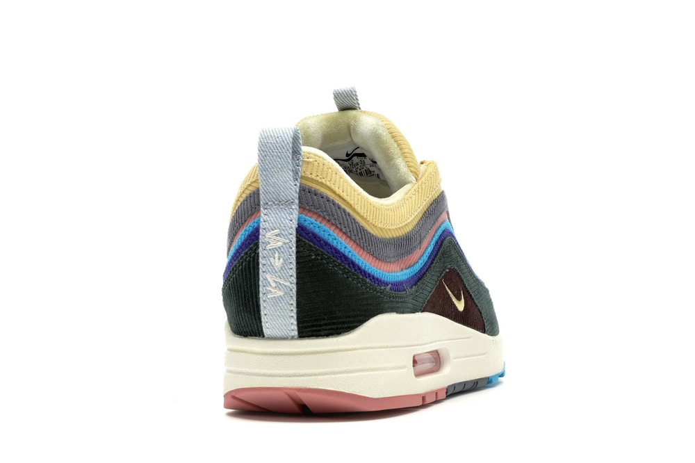
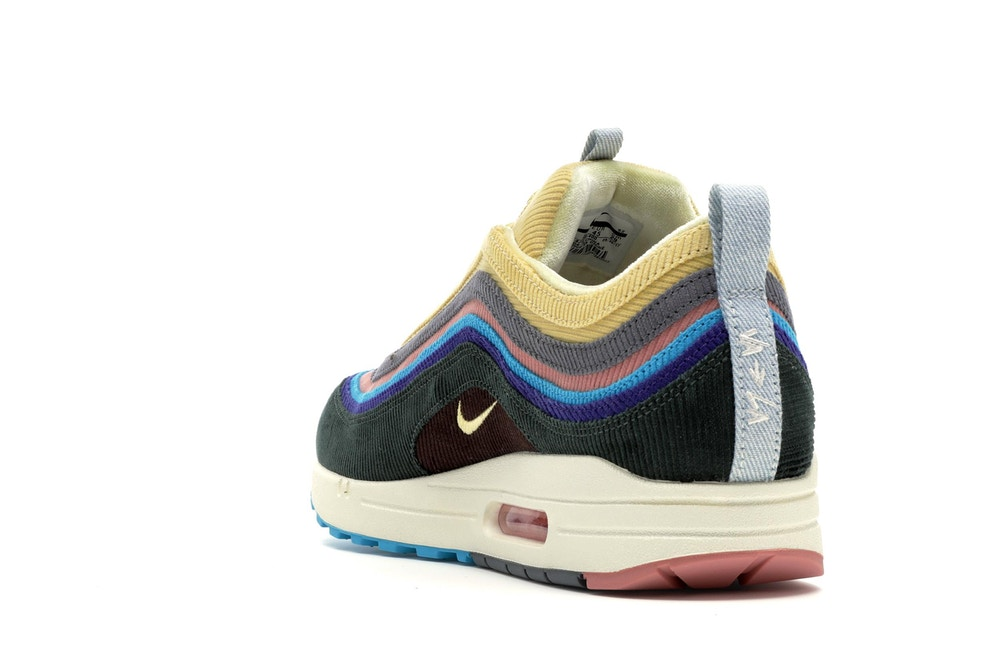
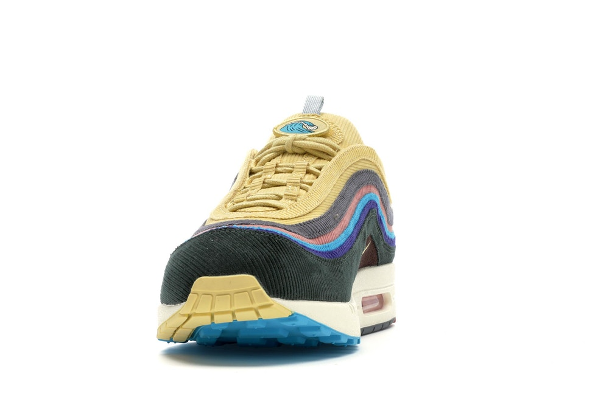

Chaussure pour Homme
1000€
Nike Air Max 1/97 Sean Wotherspoon
(Extra Lace Set uniquement)
DESCRIPTION : L'Air Max 97/1 Sean Wotherspoon est un parfait exemple de ce dont parlait Kevin Garnett lorsqu'il a crié que «TOUT EST POSSIBLE !!» Cette Nike Air Max 97/1 ultra-spéciale faisait à l'origine partie d'un concours de design Nike auquel Sean a participé et a fini par gagner. Apparemment inspirée par l'amour de Sean pour les chapeaux Nike vintage des années 1980, cette chaussure présente à la fois la tige de la Air Max 97 et la semelle de la Air Max 1, un combo tueur. La chaussure a également une tige en velours côtelé coloré unique avec des bords effilochés, un look vraiment unique, avec du velours des orteils au talon. Ces Grails sont tombés le jour de l'Air Max 2018 (26 mars) et se sont vendus au détail à 160 $.